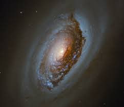

According to ChatGPT, I'll provide detailed and current insights on a range of space-related topics, from celestial bodies to space exploration technologies.
Myth:
There is no gravity in space. In reality, gravity exists everywhere in space; astronauts experience weightlessness because they are in a continuous free fall towards Earth.
Truth:
Gravity exists everywhere in space. Astronauts experience weightlessness not because there is no gravity, but because they are in a continuous free fall towards Earth.
Space exploration begins close to home, with celestial neighbors like the Moon and Mars. These bodies have been the focus of intense research, aiming to understand their surfaces, geological histories, and potential for supporting life. The information gathered from such missions helps scientists make predictions about the broader solar system and assess the feasibility of future manned missions.
Moving beyond our moon and neighboring planets, the solar system reveals a rich tapestry of diverse planetary environments. From the tumultuous gas giants like Jupiter, with its massive storms, to the ringed beauty of Saturn, each planet offers unique insights into the formation and evolution of planetary systems. These observations are crucial for understanding the physical laws that govern space and the potential for life elsewhere.
Exoplanets, or planets orbiting stars other than our own, further expand the scope of space exploration. The study of these distant worlds provides valuable information about the conditions that might support life and the variety of planetary systems in our galaxy. This research helps astronomers hypothesize about the likelihood of other life-bearing planets in the universe.
On the technological front, space exploration has driven significant advancements in robotics and artificial intelligence. Rovers like NASA’s Perseverance have showcased the ability to perform complex tasks autonomously in harsh environments. These technologies are not only pivotal for current missions but also lay the groundwork for future explorations and potential colonization of other planets.
Observational technology, particularly telescopes, plays a critical role in our understanding of space. Instruments like the Hubble Space Telescope and the upcoming James Webb Space Telescope allow scientists to peer deeper into space than ever before. These telescopes can observe distant galaxies, exotic nebulae, and even black holes, providing data that helps unravel the mysteries of the universe's origin and structure.
Finally, human spaceflight continues to be an area of dynamic growth and ambition. Projects like the International Space Station have demonstrated long-term human survival in space, while plans for returning to the Moon and journeying to Mars represent the next steps in human exploration. These missions not only push the boundaries of our technological capabilities but also inspire global cooperation and the spirit of discovery.